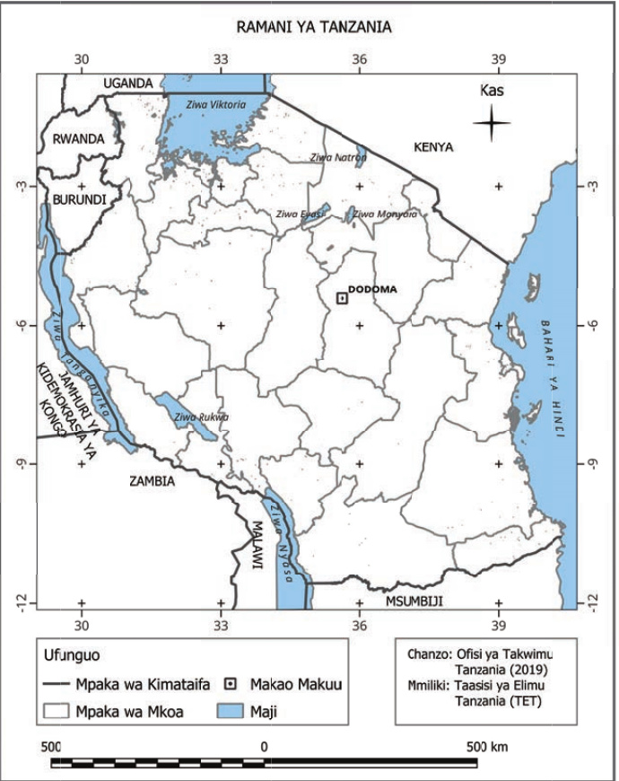

(f)Mistari ya gridi: ni mistari inayogawanya ramani katika miraba.Mistari hii inakusaidia kupata maeneo mahususi kwenye ramani.Kila mraba una namba au herufi inayokusaidia kupata vitu kwa urahisi;
(g)Chanzo: Kinaelezea mahali palipotumika kupata taarifa zilizowasilishwa kwenye ramani.Chanzo kinaweza kuwa shirika au taasisi ya kiserikali au isiyo ya kiserikali.Kuwasilisha chanzo cha ramani husaidia kuthibitisha usahihi wake na kuwawezesha watumiaji wengine kuirejelea katika kazi zao.Kielelezo namba 8 kinawakilisha vipengele muhimu vya kuzingatia katika ramani.

Kielelezo namba 8: Vipengele muhimu vya ramani